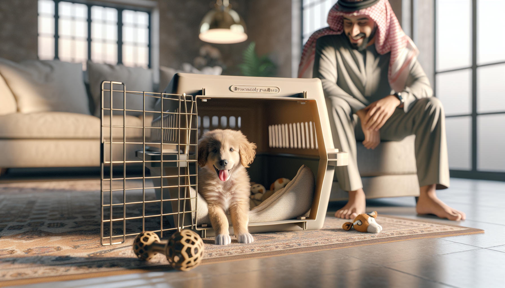

Crate training is one of the most useful life skills you can teach a puppy. Done correctly, a crate becomes a safe, restful space that helps with potty training, prevents destructive chewing, supports better sleep, and makes travel or vet visits less stressful. Done poorly, it can create fear, frustration, and resistance. The good news is that most puppies can learn to love their crate when the process is gradual, positive, and age-appropriate.
If you are a new puppy parent, first-time dog owner, or rescue adopter, this complete guide will walk you through exactly how to crate train a new puppy using humane, science-backed methods. You will learn what size crate to choose, how to set it up, how to build positive associations, what schedule to follow, and how to solve common setbacks without punishment. The goal is not simply to get your puppy to tolerate the crate. The goal is to help them feel secure and confident in it.
Dogs are denning animals to some extent, but that does not mean every puppy automatically enjoys a crate. A crate is a management tool, not a magic solution. When introduced thoughtfully, it can support healthy routines and reduce stress for both you and your puppy.
Here are some of the biggest benefits of crate training:
Supports potty training: Most puppies are less likely to eliminate where they sleep, which can help them learn bladder control and a regular bathroom routine.
Prevents unsafe chewing: Puppies explore with their mouths. A crate keeps them away from electrical cords, shoes, furniture, and anything dangerous when you cannot supervise.
Promotes rest: Overtired puppies often become nippy, wild, and unable to settle. A crate can help create a predictable nap routine.
Builds independence: Short, positive crate sessions teach your puppy that being alone for brief periods is safe.
Helps with travel and recovery: Crate comfort is useful for car rides, grooming, boarding, vet stays, and post-surgery rest.
The key principle is simple: the crate should predict comfort, calm, and good things. It should never be used as a place of punishment.
Before training begins, make sure the crate itself works for your puppy. The wrong size or setup can slow progress.
Choose the right size: Your puppy should be able to stand up, turn around, and lie down comfortably. If the crate is too large, your puppy may sleep on one side and potty on the other. For growing puppies, many wire crates come with divider panels so you can expand the space as your puppy matures.
Pick a crate type: Wire crates offer ventilation and visibility. Plastic airline-style crates feel more enclosed and cozy for some dogs. Soft-sided crates are usually best for dogs already comfortable with confinement, not brand-new puppies that chew.
Add safe comfort: Use soft bedding only if your puppy is not likely to shred or ingest it. Include a safe chew toy or food-stuffed toy to help create positive associations. Keep the interior simple and safe.
Place the crate wisely: In the beginning, put the crate in a quiet but social area of the home, such as the living room during the day. At night, many puppies do best with the crate in the bedroom or close by so they do not feel isolated.
Create a calm environment: Some puppies relax with a light crate cover on part of the crate, while others prefer full visibility. Watch your puppy's body language and adjust. Good airflow and comfortable room temperature matter.
The first few experiences shape how your puppy feels about the crate. Your job is to make it interesting, safe, and rewarding. Do not shut the door right away and expect your puppy to settle. Instead, build value in small steps.
Start with the crate door open. Toss a few treats inside and let your puppy go in and out freely. Praise calmly. Feed meals near the crate at first, then just inside the crate, and eventually all the way at the back. You can also place a stuffed food toy inside so your puppy chooses to stay in a little longer.
Try this simple progression:
Let your puppy explore the crate voluntarily.
Reward any interaction: looking at it, stepping in, sitting inside, or lying down.
Feed meals in the crate with the door open.
Close the door for a few seconds while your puppy enjoys a chew or food toy, then open it before they become upset.
Gradually increase the closed-door time in tiny increments.
Keep your tone matter-of-fact and reassuring. Excited greetings and dramatic exits can increase arousal and make alone time harder. Calm in, calm out is the rule.
If your puppy whines the moment the door closes, that is information, not defiance. It means the step was too big. Go back to shorter durations and easier repetitions.
Puppies do best with structure. A predictable routine helps them learn when to eat, play, potty, and rest. Crate training is easiest when it is woven into the day rather than treated as one long test of endurance.
A sample daily pattern might look like this:
Wake up and go outside immediately for a potty break.
Breakfast, brief play or training, then another potty trip.
Short crate nap with a chew or calming routine.
Potty break after waking.
Play, socialization, training, lunch if age-appropriate, then potty.
Another short crate rest period.
Repeat cycles of activity, potty, and rest throughout the day.
Evening wind-down, final potty break, then bedtime in the crate.
Young puppies need frequent bathroom trips. A common guideline is that a puppy may be able to hold their bladder for about one hour per month of age during the day, though this varies widely and should not be pushed. Overnight, some puppies can last longer, but many still need one or more nighttime potty trips at first.
As a general rule, crate time should be short and appropriate for your puppy's age, emotional state, and recent exercise and potty needs. A tired, recently pottied puppy with a stuffed toy may rest comfortably. An energetic puppy who has not had their needs met is likely to protest.
Some whining is normal during adjustment, especially in the first nights. Your goal is to reduce distress, not force your puppy to "cry it out." Prolonged panic can create negative associations and make the crate harder to use later.
To prevent problems:
Meet needs first: Make sure your puppy has had a potty break, some movement, mental enrichment, and a chance to settle before crating.
Use high-value rewards: Reserve special chews or food toys for crate time.
Build duration gradually: Increase time in small, successful steps.
Avoid using the crate for punishment: The crate should not predict anger, scolding, or isolation after mistakes.
Respond thoughtfully at night: If a very young puppy wakes and cries after sleeping for a while, they may genuinely need to go out.
If your puppy has an accident in the crate, do not punish them. Clean the area thoroughly with an enzymatic cleaner and reassess the setup. The crate may be too large, the puppy may have been left too long, or the potty schedule may need adjusting.
If your puppy screams, drools excessively, bites at the bars, or shows signs of panic, stop and rethink the plan. Those signs suggest distress, not stubbornness. In these cases, slower training and support from a qualified, force-free trainer or veterinary behavior professional may be appropriate.
The first few nights with a new puppy are often the hardest. Everything is unfamiliar, and many puppies have never slept alone before. You can make nighttime crate training smoother with a few simple strategies.
Keep the crate near you at night, especially during the first week or two. Hearing and smelling you can help your puppy settle. Take your puppy out right before bed. Keep nighttime potty trips boring and quiet: leash on, potty, calm praise, back to bed. No play session.
A consistent bedtime routine helps. Offer a final chance to chew, dim the lights, reduce activity, and use the same sleep cue each night. Some puppies relax with white noise or a heartbeat-style toy, though these are optional.
If your puppy fusses briefly, pause and listen. They may resettle. If crying escalates or it has been a reasonable amount of time since the last potty break, take them out calmly. Over time, as bladder control improves and confidence grows, nighttime interruptions usually decrease.
Many crate training struggles come from going too fast or expecting too much too soon. Avoiding a few common mistakes can make the process much easier.
Using the crate only when you leave: This can make the crate predict isolation. Practice short crate sessions while you are home too.
Leaving a puppy crated too long: This often leads to accidents, frustration, or fear.
Skipping exercise and enrichment: Puppies need appropriate physical activity, training, sniffing, and chewing opportunities.
Rushing door closure: Build comfort with the crate before expecting long closed-door periods.
Releasing during intense crying every time: Try to avoid teaching that panic opens the door, but also do not ignore true distress. Work below your puppy's threshold.
Assuming all puppies respond the same way: Temperament, age, breed tendencies, and past experiences all matter.
The best crate training plan is flexible. Some puppies settle in a day or two. Others need several weeks of patient repetition. Progress is not always linear, especially during developmental changes or after exciting days.
Crate training a new puppy is not about control. It is about teaching your dog how to relax, feel safe, and succeed in a human home. With the right crate, a positive introduction, a realistic schedule, and plenty of patience, most puppies can learn that their crate is a comfortable place to rest.
Keep sessions short, rewarding, and appropriate for your puppy's age. Watch body language, respond to genuine needs, and avoid punishment. If you focus on confidence rather than compliance, you will build a stronger foundation for potty training, independence, and lifelong calm behavior.
Want more step-by-step help with puppy routines, house training, chewing, socialization, and obedience? Get our full Dog Training eBook series — new titles added weekly.